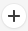
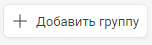
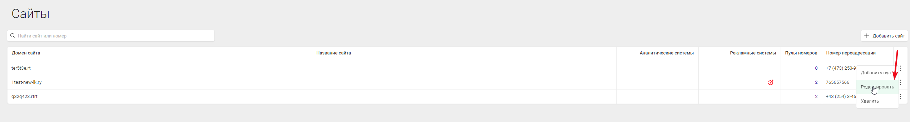
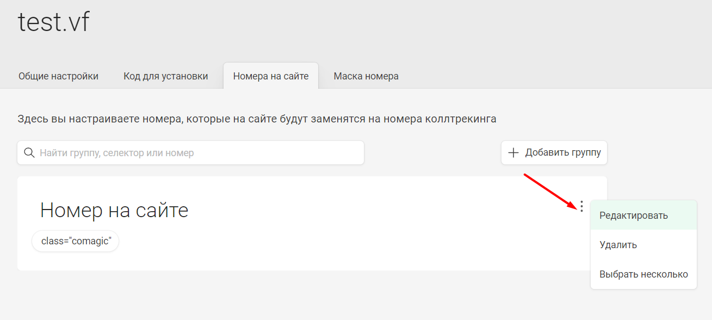
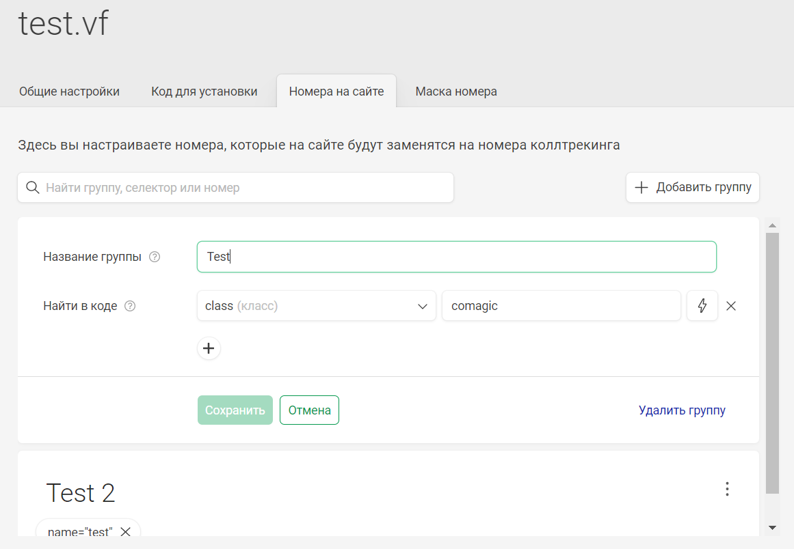
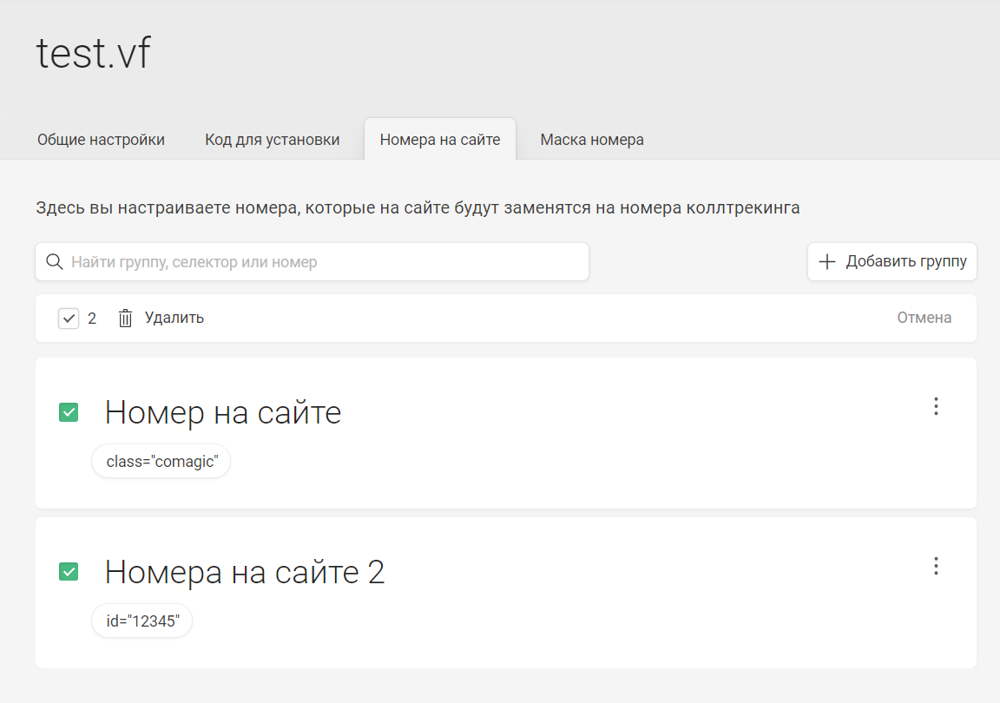
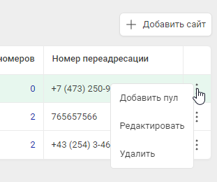
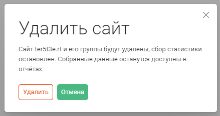
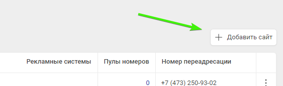

Для начала работы с CoMagic вам необходимо зарегистрировать свой сайт в сервисе и получить код вставки.
1. Необходимо перейти в раздел меню Сайт - Добавить сайт
В открывшемся окне заполните основную информацию:
Адрес сайта
Номер для переадресации(от 9 до 15 цифр) - это номер телефона вашей компании, на который будут поступать звонки от посетителей сайта по умолчанию, если не применены индивидуальные настройки для коллтрекинга или виджетов (сайтфона/лидогенератора).
Поля обязательны к заполнению, после ввода данных нажмите Продолжить
2. Раздел "Код для установки":
Для работы сервиса, скопируйте и установите код на ваш ресурс.
Для сайта воспользуйтесь кодом и инструкцией на вкладке "<HTML> код".
Для Google Tag Manager воспользуйтесь кодом и инструкцией на вкладке "Код для GTM"
Для ускоренных страниц Яндекса или Google - код для турбо-сайтов Яндекса и AMP-коды соответственно.
Обратите внимание, что пока интеграция с турбо-сайтом ЯД находится в тестовом режиме, необходимо заводить домен в формате .turbo.site. Для других доменов интеграция работать не будет.
Нажмите Продолжить
3. Раздел "Номер на сайте":
а. Укажите "Название группы" - название одного или нескольких номеров для подмены на вашем сайте. Например, "номер в шапке" или "номера на странице". Если название не будет указано, имя группы будет присвоено по умолчанию "Номер на сайте", "Номер на сайте 1" и т.д. в зависимости от кол-ва добавляемых групп.
b. "Найти в коде" - укажите, какие номера вашего сайта необходимо подменять. В HTML- коде вашего сайта каждый номер находится в элементах, содержащих определенные атрибуты(id, name, class, selector или номер).
Добавьте в наш сервис значения атрибутов, чтобы мы нашли номера, которые нужно подменить. Или просто укажите номер телефона, т.е. последовательность цифр, который нужно подменить.
Если номеров несколько, объедините их в группу(для добавления номера в группу нажмите ) или создайте для каждого свою (для добавления еще одной группы нажмите "Добавить группу" ). Это позволит в дальнейшем при настройке пула сделать автоматический выбор номеров на каждую группу в отдельности, при необходимости. Номера можно настроить позже в разделе редактирования.
Автоматически настраивается выбор номера, с указанием номера из основной информации.
Групп номеров может быть несколько, внутри каждой группы можно выбирать разные селекторы и их значения.
Нажмите Сохранить сайт
4. Созданный сайт вы найдете в разделе Сайт - Список сайтов
Редактирование сайта
Для перехода к редактированию сайта можно перейти к списку всех сайтов, найти нужный и кликнуть на его домен:
или кликнуть по символу доп.опций справа в таблице - Редактировать:

Редактирование состоит из четырех вкладок:
1. Общие настройки
В общих настройках можно выключить сервис, добавить название сайта, снять галку "Отслеживать поддомены", а также отредактировать "Срок хранения куки посетителя".
Подробнее по каждому разделу:
Активность сервиса - возможность деактивировать сервис для одного конкретного сайта. В деактивированном состоянии производится только сбор статистики сайта, все сервисы (коллтрекинг, онлайн-консультант) отключены и не работают.
Название сайта - можно указать любое понятное вам название сайта для удобства работы с сервисом.
Отслеживание поддоменов - по умолчанию включено, при использовании настройки сервис будет работать на всех поддоменах. Настройка не влияет на работу сервиса на сайте с адресом, соответствующим основному, но без www или с www.
Номер для переадресации - это номер телефона вашей компании, на который будут поступать звонки от посетителей сайта по умолчанию, если не применены индивидуальные настройки для коллтрекинга или виджетов (сайтфона/лидогенератора).
Срок хранения куки посетителя - по умолчанию составляет 90 дней. Количество дней, в течении которых хранится информация о посетителе. Если по истечении указанного периода посетитель не переходил на сайт, но перешёл позднее, то он будет считаться новым посетителем.
Сохранение изменений на данной вкладке происходит по кликну на Сохранить.
При клике на Отмена ранее веденные изменения на данной вкладке отменяются.
2. Код для установки - аналогичный раздел, как при создании сайта.
3. Номера на сайте - Настройка групп номеров на сайте для подмены. Здесь можно отредактировать ранее созданные группы или создать новые.
У каждой группы есть меню, предполагающее несколько действий:

пункт "Редактировать" раскрывает настройку групп, где можно вносить изменения или удалить группу. Изменения сохраняются по клику на кнопку "Сохранить".
По клику на кнопку "Отмена" внесенные изменения отменяются, выход из режима редактирования:

"Выбрать несколько" позволяет выбрать несколько групп для массового удаления:

4. Маска номера
На этой вкладке можно настроить, в каком виде будут отображаться номера коллтрекинга на сайте. Каждый блок соответствует группе на вкладке "Номера на сайте" и разделен на подблоки соответствующие каждому элементу в группе.
Маска телефона - Выберите один из существующих шаблонов или настройте свой, используя теги или добавляя любой текст. Значения тегов: {country} - код страны, {city} - код города, {phone} - номер телефона. Можно выбрать один из шаблонов или же ввести свой вариант.
Номер {phone} - Выберите, как будет отображаться номер в теге {phone}
Изменения в маске и номере сохраняются при потере фокуса с полем ввода, т.е. при клике в тело страницы, другое поле, настройки сайта и т.д.
Список сайтов
Созданный сайт вы найдете в разделе Сайт - Список сайтов
В таблице присутствуют столбцы:
Домена сайта
Название сайта - любое понятное вам название сайта для удобства работы с сервисом.
Аналитические системы - интегрированные аналитические системы, например, Яндекс.Метрика
Рекламные системы - интегрированные рекламные системы, например, Google Ads, Яндекс.Директ и т.д.
Пулы номеров - количество связанных с данным сайтом пулов номеров, число кликабельно, при клике происходит переход в отфильтрованный по данному сайту список пулов
Номер для переадресации - это номер телефона вашей компании, на который будут поступать звонки от посетителей сайта по умолчанию, если не применены индивидуальные настройки для коллтрекинга или виджетов (сайтфона/лидогенератора).
Поле с дополнительными оперциями с сайтом, при клике на иконку рядом с каждым сайтом полявляется меню действий

Добавить пул - при клике происходит переход в меню создания онлайн пула для данного сайта
Редактировать - при клике происходит переход в режим редактирования для данного сайта
Удалить - при клике появлется окно подтверждения удаления сайта. При нажатии Удалить - сайт безвозвратно удаляется

Так же в списке сайтов присутствует дополнительный функционал добавления сайтов

.png)


.png)
.png)